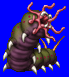
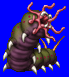
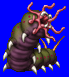
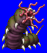

Height/Length: 2 cm - 5 m Weight: < 1 lb +
Habitat: Cave Origin: South America
Meaning:The English word for "thing that crawls"
The caterpillar is shown here, but many of the same characteristics can be ascribed to an entire class of creatures collectively referred to as "crawlers". Some such crawlers transform after their larval stage, such as the caterpillar, while others don't, like the scorpion. The scorpion type has stingers which can paralyze its victim.